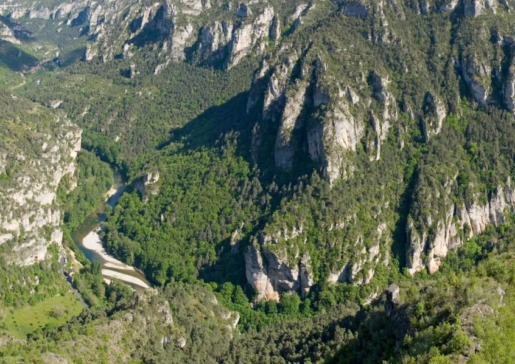
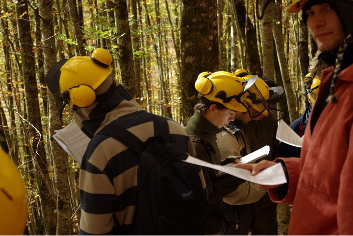

Marteloscope
ImprimerCréé pour former les professionnels de la forêt, le marteloscope permet de simuler les effets des choix de martelage. Il s’agit d’une zone d’un hectare de forêt où chaque arbre est numéroté et décrit, et où les choix de coupe sont justifiés en fonction des objectifs de gestion forestière.
Le MAB France a initié des études au sein de plusieurs Réserves de biosphère visant à élargir l’utilisation du marteloscope à des publics non forestiers dans un objectif de dialogue et de concertation. Des adaptations de cet outil à d’autres types de forêt, tels que la forêt méditerranéeenne, sont également en cours.
Rendu moins technique et abordant des thèmes plus larges que la sylviculture, l’outil permet :
- la sensibilisation du public au milieu forestier et à sa gestion,
- la rencontre et la discussion, sur le terrain, de différents acteurs du territoire pour un échange de points de vue.
Adaptation pédagogique dans la Réserve de biosphère des Cévennes
La démarche d’adaptation a débuté par la réalisation d’enquêtes menées auprès d’élus, de forestiers, d’enseignants et d’associations pour recueillir leurs attentes en matière de gestion de la forêt. Cela a abouti à un élargissement du nombre de thématiques prises en compte dans les choix de gestion : production forestière certes, mais également biodiversité, accueil de la grande faune, sécurité du public, stockage du carbone… Par ailleurs, dans un souci de compréhension de tous les interlocuteurs, les informations et les résultats du marteloscope sont présentés sans termes techniques, de façon simple et attractive. Les différents acteurs du territoire peuvent désormais discuter de leurs points de vue, échanger leurs expériences et élargir leurs connaissances autour d’un outil adapté à leurs besoins. A noter que cette action a été menée dans le cadre d’un stage de fin d’études réalisé par une étudiante de la Formation des ingénieurs forestiers de Nancy, sous la houlette du Parc National des Cévennes, de Supagro Florac, de l’ONF et du comité français du MaB.
Élargissement à la forêt méditerranéenne dans le Lubéron
La démarche d’adaptation a débuté par la réalisation d’enquêtes menées auprès d’élus, de forestiers,
Cela a abouti à un élargissement du nombre de thématiques prises en compte dans les choix de gestion :
production forestière
biodiversité, accueil de la grande faune, sécurité du public, stockage du carbone…
Par ailleurs, dans un souci de compréhension de tous les interlocuteurs, les informations et les résultats du marteloscope sont présentés sans termes techniques, de façon simple et attractive. Les différents acteurs du territoire peuvent désormais discuter de leurs points de vue, échanger leurs expériences et élargir leurs connaissances autour d’un outil adapté à leurs besoins.